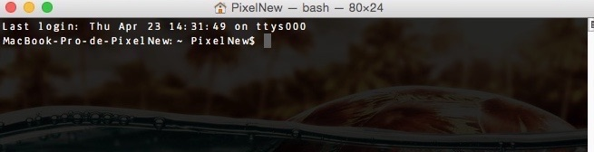

Design d'expérience utilisateur mobile pour une application sur le thème de l'aventure.
LogicielPhotoshop
Affiche de film
Poster
Création d'un poster pour le film Django Unchained pour le workshop "Demystifying Graphic Design: How Posters Work" avec Ellen Lupton,
conservatrice du design contemporain chez Cooper Hewitt et du Smithsonian Design Museum à New York.
Création d'un logo pour la participation de l'association RAID'Y Two Smile au Raid Amazones au Vietnam du 11 au 20 octobre 2019 afin de
récolter des fonds pour l'association Hôpital Sourire de Figeac. Le Raid Amazones est un Raid multisports 100% féminin qui a lieu, chaque année depuis 19 ans,
dans un pays différent. Au programme courses d'orientation et randonnées, canoë kayak, VTT et tir à l'arc en équipe.
OutilsCrayon graphite et papier
LogicielsPhotoshop, Illustrator
Affiche de concert
Poster
Réalisation d'une affiche de concert pour le chanteur John Singer dans le cadre du Design Graphic Bootcamp avec le designer et directeur créatif
Derrick Mitchell.
LogicielPhotoshop
Gestion de version avec Git et Bitbucket
Article
Le gestionnaire de version est l'outil indispensable du développeur qui souhaite enregistrer et conserver les différentes versions de ses fichiers, images, codes sources...
Ce système de contrôle des versions (SCV ou SCV en anglais) permet notamment au développeur de :
gérer un projet seul ou avec d'autres développeurs
garder une trace des changements effectués dans le projet en cours
revenir à une version antérieure d'un document
faciliter la collaboration avec les autres personnes intervenant dans le projet
partager les fichiers avec les autres développeurs du projet
Pour contrôler les versions de ses fichiers, le développeur utilise un logiciel de gestion de version et un hébergeur de dépôt.
Un logiciel de version décentralisé comme Git permet à chaque
développeur de travailler de son côté, à son rythme et de façon asynchrone des autres développeurs. Il existe ainsi plusieurs dépôts venant de chaque intervenant.
À l'inverse, dans une gestion de version centralisée, il n'existe qu'un seul dépôt des versions sur lequel tout le monde travaille, ce qui peut être un risque dans le
sens où l'expérimentation sur un fichier peut casser tout le projet. Un service web d'hébergement de dépôt est également nécessaire afin que les développeurs disposent
d'un canal d'échange pour leurs travaux respectifs. Bitbucket est un hébergeur gratuit pour les dépôts Git et Mercurial (un autre logiciel de version décentralisé).
Il existe un autre service web d'hébergement plus connu, GitHub, qui permet lui aussi de stocker en ligne les dépôts publics ou privés.
Comparatif entre Bitbucket et GitHub
Bitbucket
Git
Dépôt public
gratuit
gratuit
Dépôt privé
gratuit
payant
Nombre de développeurs
5 maximum
illimité
Conclusion
Plus économique pour les projets nécessitant une petite équipe ou pour les projets privé.
Mieux adapté pour les grands projets ou les projets open source.
GitHub est payant pour l'hébergement des dépôts privés, et est plus focalisé sur les dépôts publics et l'open source.
Bitbucket est gratuit pour l'hébergement des dépôts privés de façon illimitée et permet d'héberger ses fichiers privés.
À vous de déterminer quel est l'aspect le plus important pour vous, être visible et privilégier l'open source ou travailler en équipe sur de petits projets ou des dépôts privés.
Fonctionnement de Git
Git se comporte comme un arbre avec des branches. La base du tronc est le dossier parent auquel sont rattachés les dossiers enfants.
Les différentes branches de l'arbre sont les bifurcations. Travailler sur une branche permet de faire une bifurcation sur la branche principale, cela sert pour intégrer une nouvelle fonctionnalité ou un nouveau module dans son projet par exemple.
On construit cet arbre en créant des commits. Un commit est un instantané d'un fichier, c'est comme un maillon de notre chaîne, une sorte de checkpoint.
La construction d'un commit est définitif car son contenu ne pourra jamais être modifié, on travaillera toujours avec une copie de ce contenu.
Git utilise 3 zones de travail :
le Working Directory qui est le dossier de travail contenant les fichiers dans leur version actuelle
l'index qui permet de stocker les modifications, l'index s'appelle aussi Cache ou Staging Area
Git s'utilise en ligne de commande mais il existe des interfaces graphiques comme par exemple SourceTree de Atlassian, qui permet de se connecter à un serveur distant pour cloner des dépôts existants.
Pour créer votre premier projet avec Git et Bitbucket, vous devez au préalable :
Relancez votre terminal et vérifier que git fonctionne en tapant
git
Un guide d'utilisation de Git devrait s'afficher en anglais dans votre console.
connectez-vous sur le site de bitbucket et créer un dépôt en allant sur Créer > Créer un dépôt
remplissez le formulaire pour créer votre nouveau dépôt (donnons lui le nom de Projet) en n'oubliant pas de cocher les cases Gestion de bug et Wiki, puis cliquez sur Créer un dépôt
cliquez sur Cloner le dépôt en haut à gauche et copier l'adresse HTTPS
ouvrez votre terminal et placez vous dans le dossier de stockage de vos dépôts en utilisant la ligne de commande
Si vous ne savez pas utiliser le langage Shell en ligne de commande, je vous recommande le très bon tutoriel Reprenez le contrôle à l'aide de Linux sur le site d'OpenClassrooms.
lorsque vous êtes positionné dans votre dossier de dépôt dans votre terminal, collez l'adresse HTTPS que vous avez copié précédemment
tapez ensuite les commandes suivantes :
git status
→ détermine l'état des fichiers dans le dépôt et indique s'ils sont suivis
git add projet
→ ajoute le dossier projet à l'index, on place le dossier sous version, cela indique à Git de suivre le dossier projet
cd projet
→ ce paramètre vous place dans le dossier projet
git init nouveau dossier
→ crée un nouveau dépôt ou repository vide s'appelant nouveau_dossier
ls
→ liste les fichiers et dossiers du répertoire courant, vous pouvez constater qu'un nouveau dossier appelé nouveau_dossier existe maintenant dans votre dossierprojet
git status
→ le terminal nous indique qu'il y a un nouveau dossier, le dossiernouveau_dossier, et que ce fichier n'est pas suivi par la gestion de version
git add nouveau_dossier
→ ajoute le dossier nouveau_dossier à l'index, Git nous indique qu'il y a un nouveau dossier suivi
git commit -m "Premier commit"
→ crée un commit avec le message "Premier commit" et valide les modifications enregistrées
git log
→ inspecte l'historique des commits, vous pouvez voir que votre commit apparaît avec la date, l'heure, le nom du commit et votre message
git push
→ envoie les commits sur le serveur sinon vos commits restent en local
retournez sur votre compte Bitbucket et actualisez la page de votre premier dépôt, celle où vous avez copié l'adresse HTTPS du dépôt. Vous pouvez constater que votre dépôt a bien été envoyé sur votre serveur, et vous pouvez voir les dossiers créés dans l'onglet Source situé sous l'onglet Vue d'ensemble dans le menu de gauche.
Vous venez de créer votre premier dépôt. A vous maintenant d'explorer les possibilités offertes avec la gestion de version.
Voici quelques autres commandes utiles qui pourront vous servir :
git commit -a
→ place tout fichier déjà en suivi de version dans la zone d'index afin d'éviter de faire un add
git rm -f mon_fichier
→ supprime et désindexe le fichier mon_fichier
git rm --cached mon_fichier
→ arrête le suivi du fichiermon_fichier mais le conserve dans la copie de travail
git mv mon_fichier monnouveaufichier
→ renomme le fichier mon_fichier en mon_nouveau_fichier
git show
→ affiche les détails d'un objet Git
git diff
→ affiche les modifications indexées et non indexées entre deux fichiers
git branch ma_branche
→ crée une nouvelle branche avec le nom ma_branche
git checkout
→ se positionne sur la branche voulue
git checkout -b ma_branche
→ crée la branche ma_branche et se positionne immédiatement dessus
git merge ma_branche
→ fusionne la branche ma_branche avec la branche sur laquelle on se trouve
git pull
→ récupère et télécharge les nouveaux commits présents sur le serveur
Ressources
Voici quelques liens qui pourront vous initier plus en détails à Git :
Création d'un journal local et réalisation de la charte graphique (identité visuelle, mise en page,
éléments graphiques) et de la rédaction du contenu.
Hydrobiologiste, odonatologue et docteur en écologie aquatique, Sandrine Angélibert s'est spécialisée dans la
biodiversité des macroinvertébrés et des libellules adultes.
Étude anatomique de l'oeil et de la représentation du regard à travers la réalisation d'un digital painting.
LogicielPhotoshop
Activer la coloration syntaxique dans le terminal de Mac OS X
Article
Sur un Mac, il est parfois utile de pouvoir faire la différence entre les dossiers, les fichiers et les instructions tapées dans le terminal.
L'activation de la coloration syntaxique permet de mieux distinguer chaque élément, et par la même occasion elle apporte un
réel confort de lecture. Sans cette activation de couleur, le terminal ressemble à l'image ci-dessous :
Pour activer la couleur dans notre terminal, il va nous falloir modifier le fichier .bash_profile
dans lequel sont placées les variables d'environnement.
Les variables d'environnement permettent d'influencer le comportement des applications du système, comme par exemple ici l'application Terminal.
Ce fichier .bash_profile est ce que l'on appelle un fichier caché, reconnaissable au point placé devant le nom du fichier. Il est exécuté au lancement de la session de l'utilisateur.
Activation de la couleur dans le terminal
ouvrez votre terminal – vous devriez avoir un affichage basique avec le nom de votre Mac suivi de l'identifiant de connexion de votre session

vérifiez que le fichier .bash_profile existe en tapant dans la console l'instruction suivante
Vous pouvez collier-coller l'instruction :
ls -la | grep ".bash_profile"
Cette ligne de commande liste les fichiers du répertoire courant, en incluant les ficiers cachés, et ne conserve que les lignes contenant la clé .bash_profile.
Si le terminal affiche un message indiquant que le fichier n'existe pas, vous pouvez le créer avec l'instruction suivante :
touch .bash_profile
éditez votre fichier .bash_profile afin de modifier les variables d'environnement – l'instruction suivante permet d'ouvrir votre fichier dans l'applicationTextEdit, l'éditeur de texte par défaut sur Mac :
open -a "TextEdit" .bash_profile
TextEdit ouvre une page vide que l'on va pouvoir remplir.
si vous utilisez un terminal avec un arrière-plan clair, ajoutez les paramàtres suivants au fichier .bash_profile :
Indexation des couleurs pour la commande LSCOLORS (en anglais) : LSCOLORS & LS_COLORS
Tout ce que vous avez toujours voulu savoir sur Unix sans jamais oser le demander – Où comment utiliser la ligne de commande quand on n'y connaît goutte : http://lozzone.free.fr/unix/guide-unix.pdf
Conviviale et accueillante, l'association P.A.R.I. Solidarité est un lieu où l'échange et l'entraide sont une force pour chacun.
Elle est un lieu privilégié pour l'aide sociale et administrative ainsi qu'un partenaire de l'animation proposant divers ateliers
et activités, une distribution alimentaire et une boutique de vêtements d'occasion.

{kind=link}
{kind=link}
{kind=link}
{kind=link}
{kind=link}
{kind=link}
{kind=link}
{kind=link}
{kind=link}
{kind=link}